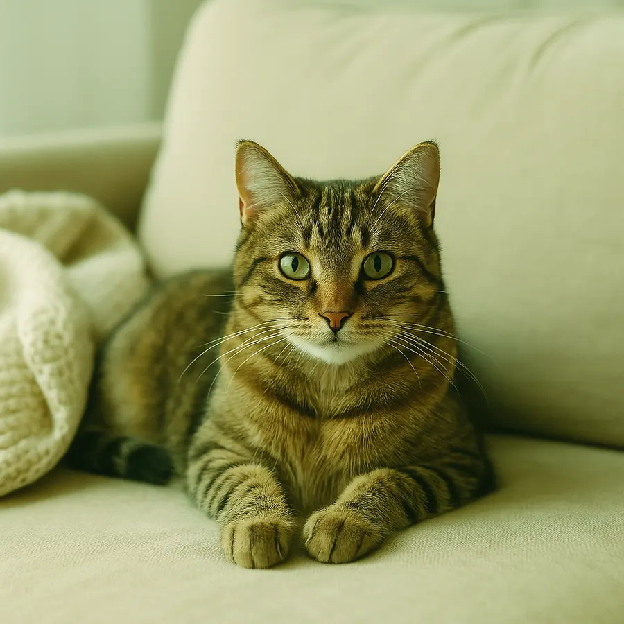

Seu pet limpinho, cheiroso e feliz
Banho e tosa com carinho em BH. Agende em 1 minuto, sem precisar ligar.
A gente busca, dá banho e devolve. Você nem sai de casa.
Quem já passou por aqui

A minha cachorrinha Mila foi muito bem tratada e recebida com todo carinho e amor! Sem contar que ela saiu de lá linda!
Mando meus três cachorrinhos sempre lá e gostaria de ressaltar o quão lindos e cheirosos eles voltam. A Juliana é uma maravilhosa sempre me atende muito e supera todas as nossas expectativas, cuida dos nosso meninos com muito carinho e amor, sempre atenciosa❤️✨
Onde estamos
- Av. Padre José Maurício, 572 – Nova Cintra
2º piso · Belo Horizonte - Seg a sáb, 13:30 às 20:00 • domingo fechado
- WhatsApp +55 31 98233-9672